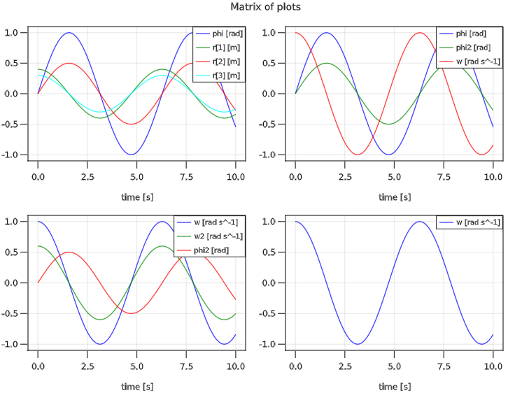

Functions
This chapter documents the exported functions of ModiaPlot.
| Functions | Description |
|---|---|
plot | Plot simulation results in multiple diagrams/figures |
printResultInfo | Print info of the signals that are stored in result |
closeFigure | Close one figure |
closeAllFigures | Close all figures |
showFigure | Show figure in window |
saveFigure | Save figure in png, jpg or bmp format |
Interactive Commands
Once a plot window has been created, then the following interactive commands are available:
| Functionality | GLMakie |
|---|---|
| Zoom | Mouse wheel scrolling |
| Pan | Mouse right click and dragging |
| Save in png, jpg, bmp format | saveFigure |
Plot Functions
ModiaPlot.plot — Functionplot(result, names;
heading = "", grid = true, xAxis = "time",
figure = 1, prefix = "", reuse = false, maxLegend = 10,
minXaxisTickLabels = false,
MonteCarloAsArea = true)Generate line plots of the signals of the result data structure that are identified with the names keys.
By default result is any type of dictionary with key type ::AbstractString and value type ::Any. By providing own implementations of some access-functions, other result data structures can be used (for details see xxx).
Argument names defines the diagrams to be drawn and the result data to be included in the respective diagram:
If
namesis a String, generate one diagram with one time series of the variable with keynames.If
namesis a Tuple of Strings, generate one diagram with the time series of the variables with the keys given in the tuple.If names is a Vector or a Matrix of Strings and/or Tuples, generate a vector or matrix of diagrams.
Note, the names (and their units, if available in the result) are automatically used as legends in the respective diagram.
A signal variable identified by a String key can be a scalar of type <:Number or an array of element type <:Number. A signal can be either a constant or a time series where for every time instant one value of the signal variable is stored in result (time instants are along the first dimension of an array). In case of a constant, a constant line is drawn for the first to the last time instant.
Note, before passing data to the plot package, it is converted to Float64. This allows to, for example, also plot rational numbers, even if not supported by the plot package. Measurements.Measurement{xxx} is specially handled.
Optional Arguments
heading::AbstractString: Optional heading above the diagram.grid::Bool: = true, to display a grid.xAxis::AbstractString: Name of x-axis.figure::Int: Integer identifier of the window in which the diagrams shall be drawn.prefix::AbstractString: String that is appended in front of every legend label (useful especially ifreuse=true).reuse::Bool: If figure already exists and reuse=false, clear the figure before adding the plot. Otherwise, include the plot in the existing figure without removing the curves present in the figure.maxLegend::Int: If the number of legend entries in one plot command> maxLegend, the legend is suppressed. All curves have still their names as labels. In PyPlot, the curves can be inspected by their names by clicking in the toolbar of the plot on buttonEdit axis, curve ..and then onCurves.minXaxisTickLabels::Bool: = true, if xaxis tick labels shall be removed in a vector or array of plots, if not the last row (useful when including plots in a document). = false, x axis tick labels are always shown (useful when interactively zooming into a plot).MonteCarloAsArea::Bool: = true, if MonteCarloMeasurements values are shown with the mean value and the area between the minimum and the maximum value of all particles. = false, if all particles of MonteCarloMeasurements values are shown (e.g. if a value has 2000 particles, then 2000 curves are shown in the diagram).
Examples
using ModiaPlot
using Unitful
# Construct result data
t = range(0.0, stop=10.0, length=100);
result = Dict{AbstractString,Any}();
result["time"] = t*u"s";
result["phi"] = sin.(t)*u"rad";
result["w"] = cos.(t)*u"rad/s";
result["a"] = 1.2*sin.(t)*u"rad/s^2";
result["r"] = hcat(0.4 * cos.(t), 0.5 * sin.(t), 0.3*cos.(t))*u"m";
# 1 signal in one diagram (legend = "phi [rad]")
plot(result, "phi")
# 3 signals in one diagram
plot(result, ("phi", "w", "a"), figure=2)
# 3 diagrams in form of a vector (every diagram has one signal)
plot(result, ["phi", "w", "r"], figure=3)
# 4 diagrams in form of a matrix (every diagram has one signal)
plot(result, ["phi" "w";
"a" "r[2]" ], figure=4)
# 2 diagrams in form of a vector
plot(result, [ ("phi", "w"), ("a") ], figure=5)
# 4 diagrams in form of a matrix
plot(result, [ ("phi",) ("phi", "w");
("phi", "w", "a") ("r[2:3]",) ],figure=6)
# Plot w=f(phi) in one diagram
plot(result, "w", xAxis="phi", figure=7)
# Append signal of the next simulation run to figure=1
# (legend = "Sim 2: phi [rad]")
result["phi"] = 0.5*result["phi"];
plot(result, "phi", prefix="Sim 2: ", reuse=true)Example of a matrix of plots:

ModiaPlot.printResultInfo — FunctionprintResultInfo(result)Print names, sizes, units and element types of the signals that are stored in result.
ModiaPlot.closeFigure — FunctioncloseFigure(figure)Close figure.
ModiaPlot.closeAllFigures — FunctioncloseAllFigure()Close all figures.
ModiaPlot.showFigure — FunctionshowFigure(figure)Has only an effect for plot package GLMakie: Shows the desired figure in the single window.
Example
using ModiaPlot
...
plot(..., figure=1)
plot(..., figure=2)
plot(..., figure=3) # only this figure is shown in the window
showFigure(2) # show figure 2 in the window
showFigure(1) # show figure 1 in the windowModiaPlot.saveFigure — FunctionsaveFigure(figure, file; kwargs...)Has only an effect for plot package GLMakie: Save figure in png, jpg or bmp format on file (kwargs... is passed to function save).
Keyword arguments
- resolution: (width::Int, height::Int) of the scene in dimensionless units (equivalent to px for GLMakie and WGLMakie).
Example
using ModiaPlot
plot(..., figure=1)
plot(..., figure=2)
saveFigure(1, "plot.png") # save in png-format
saveFigure(2, "plot.jpg") # save in jpg-format